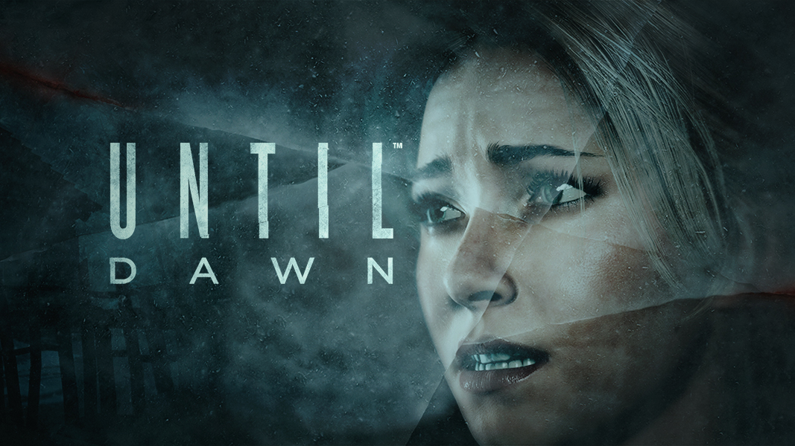

Ah, the Playstation 4. One of the greatest consoles to ever be released by the video game titans at Sony. Since the launch back in 2013, we have had 7 great years filled with blockbuster AAA titles, indie gems and incredible exclusives
As the new generation of consoles begin to takeover, I decided to take a look back at three of my favourite console exclusive titles from the PS4, highlighting what makes them so special and why no one should miss out on experiencing the games for themselves!
While you read, bear in mind that I have only considered games that I have completed. Therefore if you’re wondering why games such as Ghost of Tsushima, Death Stranding and God of War are no where to be seen, its because I haven’t got round to playing them yet.
However, before we delve into my top 3 picks, I’d like to showcase some honourable mentions.

Technically not an exclusive as the original version released on the PS3. However, it is the Remastered PS4 version that really brings Naughty Dogs vision to life. TLOU is a story driven, 3rd person survival horror game like no other. The Narrative follows Joel and Ellie as they embark on a journey through apocalyptic America fighting against both the infected and humans while making some tough moral decisions along the way as they try to make sense of their new reality.
Now this, is a controversial pick. When this first released it garnered a lot of negative attention and reviews due to it being a single player game that was only 6-10hrs long depending on difficulty. This was a problem at the time because there was no multiplayer component and it was being charged at full price. However, now that you can get it for the price of a cheeky Nandos, its more than worth a punt as no other game released has excelled at cinematic storytelling as well as this. This 3rd person shooter is set in a neo-Victorian setting with a classic tale of Vampires vs Werewolves vs the Royal Guard. If you’re looking for a short, gripping, action packed adventure, look no further.
Ever wanted to be in control of who lives and dies in your favourite teen horror flick? No? Well with Until Dawn you can anyway. Until Dawn follows a group of friends who decide to spend the night at a secluded cabin out in the snowy mountains. What go could go wrong? Depending on your choices, it could be everything.